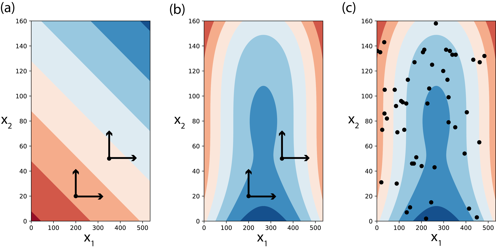

Global Versus Local Sensitivity
Global Versus Local Sensitivity¶
Out of the several definitions for sensitivity analysis presented in the literature, the most widely used has been proposed by Saltelli et al. [38] as “the study of how uncertainty in the output of a model (numerical or otherwise) can be apportioned to different sources of uncertainty in the model input”. In other words, sensitivity analysis explores the relationship between the model’s \(N\) input variables, \(x=[x_1,x_2,...,x_N]\), and \(M\) output variables, \(y=[y_1,y_2,...,y_M]\) with \(y=g(x)\), where \(g\) is the model that maps the model inputs to the outputs [39].
Historically, there have been two broad categories of sensitivity analysis techniques: local and global. Local sensitivity analysis is performed by varying model parameters around specific reference values, with the goal of exploring how small input perturbations influence model performance. Due to its ease-of-use and limited computational demands, this approach has been widely used in literature, but has important limitations [40, 41]. If the model is not linear, the results of local sensitivity analysis can be heavily biased, as they are strongly influenced by independence assumptions and a limited exploration of model inputs (e.g., Tang et al. [42]). If the model’s factors interact, local sensitivity analysis will underestimate their importance, as it does not account for those effects (e.g., [43]). In general, as local sensitivity analysis only partially and locally explores a model’s parametric space, it is not considered a valid approach for nonlinear models [44]. This is illustrated in Fig. 3.1 (a-b), presenting contour plots of a model response (\(y\)) with an additive linear model (a) and with a nonlinear model (b). In a linear model without interactions between the input terms \(x_1\) and \(x_2\), local sensitivity analysis (assuming deviations from some reference values) can produce appropriate sensitivity indices (Fig. 3.1 (a)). If however, factors \(x_1\) and \(x_2\) interact, the local and partial consideration of the space can not properly account for each factor’s effects on the model response (Fig. 3.1 (b)), as it is only informative at the reference value where it is applied. In contrast, a global sensitivity analysis varies uncertain factors within the entire feasible space of variable model responses (Fig. 3.1 (c)). This approach reveals the global effects of each parameter on the model output, including any interactive effects. For models that cannot be proven linear, global sensitivity analysis is preferred and this text is primarily discussing global sensitivity analysis methods. In the text that follows, whenever we use the term sensitivity analysis we are referring to its global application.
{kind=link}

Treatment of a two-dimensional space of variability by local (panels a-b) and global (panel c) sensitivity analyses. Panels depict contour plots with the value of a model response (\(y\)) changing with changes in the values of input terms \(x_1\) and \(x_2\). Local sensitivity analysis is only an appropriate approach to sensitivity in the case of linear models without interactions between terms, for example in panel (a), where \(y=3x_1+5x_2\). In the case of more complex models, for example in panels (b-c), where \(y={1 \above 1pt e^{x^2_1+x^2_2}} + {50 \above 1pt e^{(0.1x_1)^2+(0.1x_2)^3}}\), local sensitivity will miscalculate sensitivity indices as the assessed changes in the value \(y\) depend on the assumed base values chose for \(x_1\) and \(x_2\) (panel (b)). In these cases, global sensitivity methods should be used instead (panel (c)). The points in panel (c) are generated using a uniform random sample of \(n=50\), but many other methods are available.¶